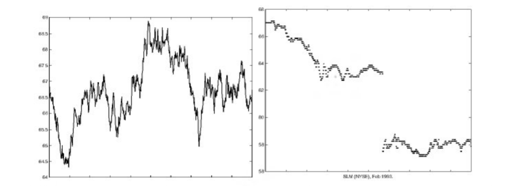

I researched this for my master's thesis and is available to view here.
I initially became interested in exp-Lévy models and jump
processes as it provided an alternative to the standard
Black-Scholes model, which assumes continuity at any
time-scale and no jumps.

On the left there is a path of the B-S model and on the right is the historical data. The discrepancy between the model and actual data is as clear as day, so I needed a new model - and the exp-Lévy model fit the criteria.
A C++ option pricing program that uses the Heston stochastic volatility model to find the the value of a European call or put option.
Available for download at this GitHub repository.